Chapter 3: VEGETATIONAL CHANGE. PLANT SUCCESSION AND THE CLIMAX
The classical view of succession
An area of bare ground when stripped of its original vegetation by fire, flood or by the drainage of a lake, does not remain devoid of vegetation for very long. The area is rapidly colonized by a variety of species which will subsequently modify one or more environmental factors. This modification of the environment in turn allows further species to become established. A subsequent development of the vegetation, by this reaction of the vegetation on the environment followed by the appearance of fresh species, is termed succession. The concept of succession was largely developed by Warming (1896), and Cowles (1901) who related the stages of sand-dune development in a time series, and finally by Clements (1904) who outlined in considerable detail the stages of a large number of plant successions, initiated by a variety of factors (Clements, 1916).
Clements introduced the term sere to describe the developmental stages through which the vegetation passes until it reaches an ultimate state of equilibrium with the climate and major geological factors of the area. Thus the well known colonization of open water is termed the hydrosere and includes several marked stages, starting with submerged aquatic plants and followed successively by floating-leaved aquatic plants, reed swamp, marsh or fen and finally carr. Clements similarly termed the stages of salt marsh succession a halosere, sand-dune succession a psammosere and the development of vegetation on bare rock surfaces a lithosere.
Analysis resolves the process of succession into several important phases:
1. Nudation, which is the initiation of the succession by a major disturbance in the environment.
2. Migration of available species (migrules) to fill the vacant ecological niches.
3. Ecesis or the subsequent ability of the migrules to germinate, grow and reproduce successfully.
4. Competition.
5. Reaction.
6. Final stabilization. (Clements, 1916.)
These two examples of reaction are fairly obvious, but frequently the reactions which are contributing to the impetus of what is clearly succession are far from clear. Vegetational change was divided by Clements into two kinds: primary succession initiated on a bare area where reactions are, initially at least, often fairly clear, and secondary succession initiated by a major environmental disturbance and disrupting a previously initiated succession or producing a marked modification in stable vegetation. For example removal of grazing from grassland, or a forest fire, both initiate a secondary succession and it is in such examples of succession that reactions are often very obscure. It may be that ecesis and competition play a more decisive role in such instances.
Other classification systems have sub-divided secondary successions into a varying number of divisions, but in general little is gained by a complex classification of successions.
The direction in which a succession will develop has been argued at considerable length in ecological literature. Phillips (1934) states 'Succession is progressive only; all examples of apparent retrogression are explicable in terms of some disturbing agency'. Similarly true succession is defined by Michelmore (1934) as inherent succession of the vegetation which takes place through the plants altering their environment. This is to be distinguished from physiographic succession due to an initial change in the environment which should apparently not be included. Similarly Tansley (1916; 1920) employs the terms autogenic and allogenic to distinguish between these two distinct successional causes. For an understanding of succession at a level which serves as a useful concept, such a degree of fine definition is not essential. Any directional change in vegetation, be it due to intrinsic properties of the plants, or to changing extrinsic factors (the environment), gives a useful and workable definition of succession as a dynamic process. This was admirably expressed by Cooper (1926) who stated that 'Succession is the universal process of change which is embodied in the great vegetational stream; all vegetational changes. whether internally or externally induced, whether gradual or abrupt, are therefore successional. (See also Gleason, 1926.)
Numerous examples of succession have been described in detail, but very few cases are available where the succession is related to even an approximate time scale. One or two outstanding exceptions to this have appeared in the literature, notably colonization of glacial moraines in Alaska where the age of the moraines is known with a fair degree of exactness. This enables the plant succession and attendant modification of the substratum by the vegetation to be related to a time scale. Similarly the sand-dune succession in the Michigan Lake Basin in America has been studied in detail and related to a time scale obtained by radio-carbon dating methods.
Plant succession on glacial moraines in Alaska
The Glacier Bay region in south-east Alaska is typical of the large-scale glacial retreat that has occurred over the last 200 years in North America, Europe and Scandinavia. The position of the snout of the glacier in historic times can be estimated by growth ring counts of the present spruce forest. Thus ring counts of trees growing beyond the maximum extent of glacier activity (easily recognized from aerial photographs) show the oldest trees to be over 600 years of age and growing on a 'raft of fallen submerged trunks. The oldest trees on the last morainic ridge are approximately 200 years old, whilst the maximum age of trees on moraines nearer the present site of the glacier progressively decreases. Cooper (1937), Field (1947) and Lawrence (1953) all contributed to a detailed study of the recession of the glacier and a clear picture is now available (Fig. 3.2). Their findings are confirmed by comparison of written records extending back to the 1890s and photographic surveys commenced around 1916.
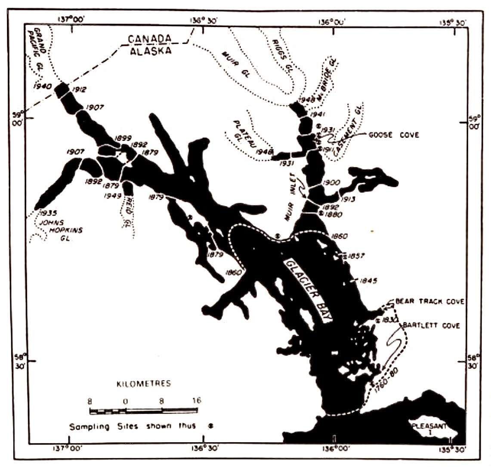
The stages of succession have been described by Cooper (1923, 1931, 1939) and by Lawrence (1953). The pioneer stage is characterized by Rhacomitrium canescens Brid., R. lanuginosum (Hedw.) Brid., Epilobium latifolium L., Equisetum variegatum Schleich., Dryas drummondii Rich. and Salix arctica Pall. The next stage is the appearance of Salix barclayi And., S. sitchensis Sans. and S. alexensis (And.) Colville, which start as prostrate forms eventually developing an erect habit and forming dense scrub. Alnus crispa Ait. Pursh. dominates the next stage of the succession and eventually forms almost pure thickets (with some scattered individuals of Populus trichocarpa T. and G.), which are finally invaded by Picea sitchensis Carr. Picea initially forms pure stands, but over a period of time Tsuga heterophylla Sarg. and T. mertensiana Carr. enter the community. On well drained slopes this stage represents the climax vegetation of the area. However, where the ground is gently sloping or flat Sphagnum species subsequently invade the moss mat of the forest floor and through the growth of Sphagnum and its ability to retain large amounts of water, the forest floor becomes soggy and root aeration decreases. This leads to the elimination of the tree species and to the establishment of muskeg dominated by Sphagnum species, with occasional scattered individuals of Pinus contorta Laws, which can apparently tolerate the wet conditions which prevail.
The organic carbon and total nitrogen concentration in the soil shows equally marked change with time (Fig. 3.5 and Fig. 3.6). The vast increase of soil nitrogen is related to the presence of bacterial nodules on the roots of Alnus which actively fix atmospheric nitrogen and contribute largely to the reserves of nitrogen in the soil via leaf fall (Fig. 3.7) (Lawrence, 1958). The invasion of spruce at this stage and the subsequent reduction of soil nitrogen strongly suggests this to be the important consideration controlling the time of entry of the spruce into the alder thickets. The elimination of the alder and its root nodules decrease the net annual addition of nitrogen as leaf litter, for spruce has no such root structures and accordingly the soil nitrogen is reduced.
The complete succession from bare morainic detritus to mature spruce forest takes approximately 250 years during which time the most significant reaction of the vegetation appears to be the building up of soil nitrogen. The reduction of soil pH is probably also closely related to this. The building up of organic carbon will influence to a considerable extent the development of soil structure and will lead to a soil with 'crumb-structure' which is markedly different from the rather amorphous glacial till. In turn this will affect soil aeration and movement of water in the soil, and both of these factors probably influence the succession. However, very little data is available which would enable a general assessment of the effect of such factors on vegetation apart from the rather more obvious relationships that exist. Clearly a detailed study is required of the exact environmental requirements of each species contributing to the succession before the complete mechanism of the succession can be fully appreciated.

Lake Michigan sand-dune succession
Cowles (1899) classic description of the sand-dune vegetation of Lake Michigan was one of the early contributions to the concept of plant successional stages in this area in relation to both the development of the soil and to the age of each dune system. During and after the retreat of the ice-age glaciers from the Great Lakes region the resultant fall in the general level of the lakes left several distinct raised beaches, with their associated dune systems. These systems, running parallel to the present shore line of Lake Michigan are about 8, 13 and 18-20 m above the present level of the lake. These old dune systems have all been dated recently by radio-carbon methods and the highest system above the prèsent lake level (Glenwood) turns out to be slightly over 12 000 years of age. The more recently established dunes were aged by morphological studies of the Ammophila colonizing them and growth ring counts of Pinus banksiana which enters the succession at an early stage (Fig. 3.8).

Use the buttons above to highlight individual successional pathways
The pioneer stage of the succession is dominated by Ammophila breviligulata which occasionally becomes established from seed but normally invades freshly deposited sand by rhizomes from young previously established dunes. The rate of dune formation established from a morphological examination of Ammophila is rapid and stable dunes are formed in about six years. Dunes which have been established for 20 years or more still have Ammophila but with an obviously reduced level of vigour. This loss of vigour has been related to potential leaching of nutrients over a 20-year period. Another suggestion invokes the inherent tendency of this species for internodal elongation which does not cease completely when stabilization has been reached. This results in the growing apex being pushed into the dry surface layers of the sand which are unfavourable for plant growth, with the consequent reduction of vigour of the plant as a whole. A further possibility may be found in the average age of the plants themselves, the loss of vigour being due to the slowing down of physiolgical mechanisms, resulting directly from old age (see Chapter 4). The next stage of the main line of succession is the arrival of Pinus banksiana and P. strobus which enter immediately after dune stabilization is reached. These species eventually are replaced by the final stage dominated by Quercus velutina. This main succession is summarized in Fig. 3.8 together with the modifications present in those dune systems where local variation of the environment can change the course of the succession markedly. Thus damp depressions caused by impeded drainage develop into a grassland community and, on the other hand, sheltered pockets on the lee slopes progress to a Tilia americana dominated intermediate stage. This different course of succession is related, in part at least, to the microclimate of these pockets which are largely protected from excessive solar radiation and wind effects. Accordingly moisture availability will be higher, which in addition to the obvious relation to plant growth would contribute some protection from fires which occur frequently in the area, the relatively moist pockets tending to be by-passed. In addition these dune pockets tend to accumulate fallen leaves brought in from the more exposed parts of the dune system and the general nutrient status of the soil increases at the expense of the rest of the area. The reaction of the vegetation on the properties of the soil is broadly similar to the example discussed above but the rate of change is considerably slower. The leaching of carbonate from the soil is very rapid (Fig. 3.9) and the surface layers (10 cm) are more or less devoid of carbonate from the soil after a few hundred years. There is a slow building up of organic carbon (Fig. 3.10) and soil nitrogen (Fig. 3.11). These three environmental changes are virtually completed in 1000 years and subsequent generations of Quercus have little effect on these soil properties.
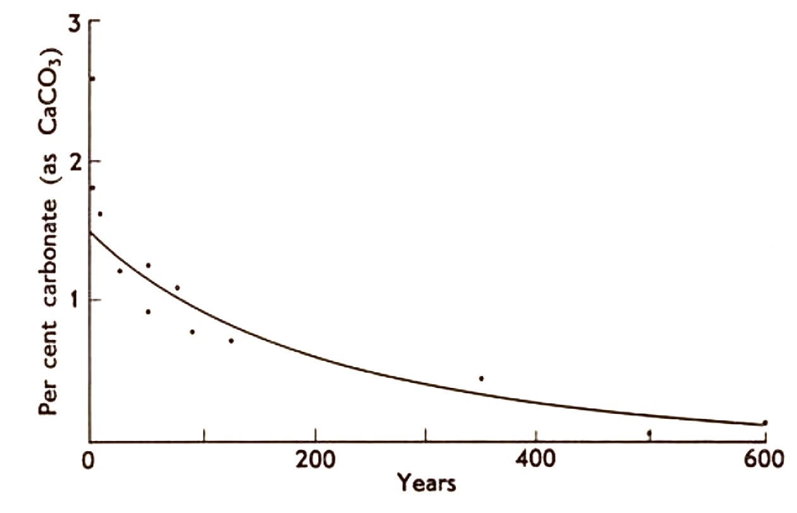
Again the relationships between the environment, the vegetational stages and the development of the succession through modification of the environment can only be described in a general way. The initial dune formation is clear and results in an ecological niche with low fertility which is in fact invaded by species with low nutritional requirements. The subsequent accumulation of soil nitrogen and organic carbon presumably control to some extent the time of entry of oak into the succession. What evidence there is suggests that Quercus velutina has relatively low nutrient requirements and accordingly is able to thrive in a habitat which remains at a very low level of soil fertility. The annual addition of leaf litter from the final stages of the succession appears to be equivalent to the amount of nutrient required to maintain the Quercus communities. Thus the soil conditions remain fairly constant over a long period of time (probably an indefinite period) and limit the further development of the succession. It appears very improbable that species with higher nutrient requirements will even enter the succession and the occasional and isolated hickory, beech and maple trees are restricted to sites with special topographic or drainage features. Accordingly the Quercus velutina represents the final stable vegetation of the area largely restricted by the edaphic features outlined above.
The classical view of the climax state
In both the examples of succession described above the vegetation has developed to a certain stage at which point it has reached a state of equilibrium with the environment. This final stage of the succession is related directly to the environment and is referred to as the climax. Numerous definitions of the climax have been made: Braun-Blanquet (1932) defined it as the development of vegetation and the formation of soil towards a definite end point determined and limited by climate. Similarly Odum (1953) suggests that a climax is the final or stable community in a successional series; it is self-perpetuating and in equilibrium with the physical habitat. Both these definitions seem very similar and the differences do not appear to be completely incompatible. However, they reflect the outlook on climax vegetation of two schools of thought which have developed since the initial usage of the word in an ecological context. The two theories concerned are referred to as the monoclimax and the polyclimax theories which respectively relate the control of climax vegetation to one factor, that of climate, or to a number of factors ranging from climate to less obvious edaphic or even biotic (i.e. animal) factors.
The existence of stable communities largely controlled by edaphic factors is obviously not denied by the protagonists of the monoclimax theory but they are regarded rather as exceptions' and categorized by the introduction of special terms -"subclimax' and 'post-climax' for example (see below). [Whitaker (1953) lists and describes in detail the numerous terms used in relating edaphically controlled climax vegetation to the ultimate climatic climax.] It is claimed that over a long period of time these apparent exceptions will be completely modified by the action of the climate into true climax vegetation.
The polyclimax theory is not hampered by this necessity of introducing a large number of terms to describe apparent exceptions to the theory - an edaphic geological or physiographic climax is accepted for what it is.
The monoclimax theory was developed largely by Clements (1916) and some of the terms relating to climax vegetation clearly show the inherent difficulty of defining a time scale over which stability can be assessed.
Subclimax
This is the penultimate stage of a succession which persists for a long time but is eventually replaced by the true climax vegetation. For example, Gleason (1922) and Cooper (1926) give an account of the relic coniferous forest uncovered in the city of Minneapolis and which was shown to be immediately post-glacial. The present climax is deciduous forest which presumably has very slowly replaced the coniferous ‘subclimax'.
Disclimax
This is the vegetation replacing or modifying the true climax after a disturbance of the environment. The majority of natural' grasslands in the British Isles below 500 m are maintained by the grazing of cattle and sheep, and if this factor was removed it is believed that a deciduous forest climax would result. Similarly the introduction of prickly pear cactus in Australia has formed a disclimax over wide areas.
Post-climax and Pre-climax
Climatic areas, latitudinally zoned from the equator to the aretic, are not discontinuous. There is a gradual change from one zone to the next reflected in equally gradual vegetational change. Any slight fluctuation of climate will modify the vegetation and such vegetation differences reflecting cooler and/or moister conditions than the average (usually topographically induced) are termed post-climax, drier and/or hotter, preclimax.
The monoclimax theory and the excessive use of this type of terminology has been severely criticized by many ecologists since rather than clarifying the position, the dozens of special terms complicate the issue out of all proportion. Conversely an explanation by polyclimax theory is readily available.
The real difference between these two schools of thought lies not in the possible existence of edaphically-stable communities but in the time factor involved in any consideration of relative stability of vegetation. Selleck (1960) expresses this very clearly: "The rift (between the two schools of thought occurs either in the assumption that, given sufficient time, climate is the over-all controlling factor of vegetation, or in the length of time considered adequate for stabilization to occur.' In other words given a sufficiently long period of time edaphic factors would be reduced to a common level by the action of climate and the vegetation as a whole would develop uniformity accordingly.
Some initial criticisms of the climax concept
Although the concept of the final end point of succession resulting in a vegetational climax, where complete equilibrium with the environment is attained and where there is thus no further directional change, was initially widely accepted, some criticisms of the theory were subsequently also widely established. Thus the concept implies environmental stability with the vegetation equilibrium accordingly also stable. It is impossible however, to define stability without reference to a time scale and since these are usually related to the life span of man himself, vegetational changes which occur over a 'geological time scale' are not readily appreciated. If the expectation of life was one minute then a population of groundsel (Senecio vulgaris) would be a climax vegetation. Conversely if our life expectation was measured in thousands of years the coniferous forest sublimax of North America would be merely a successional stage which precedes the establishment of deciduous forest. Such considerations are by no means as absurd as would be imagined. There is a continuous fluctuation of climate over large areas - the Pleistocene ice-age is an outstanding example - but other less marked changes have occurred in more recent times. Beschel (1961) gives data which show that remarkable glacier fluctuations have occurred over the last 2000 years (Fig. 3.12). The evidence is taken from a variety of sources, geomorphology, historical records and dendrochronology, and shows a series of fluctuations consistent in areas as far apart as Greenland and Africa The control of glacial activity is dependent on the over-all climate of the area and it is clear that there is a continuous variation of climate which can be very marked over a long period of time. Such climatic fluctuations will produce a successional response in apparently stable 'climax' vegetation. Cowles (1901) was well aware of this problem: ‘The condition of equilibrium is never reached, and when we say that there is an approach to the mesophytic forest, we speak only roughly and approximately. As a matter of fact we have a variable approaching a variable rather than a constant.’
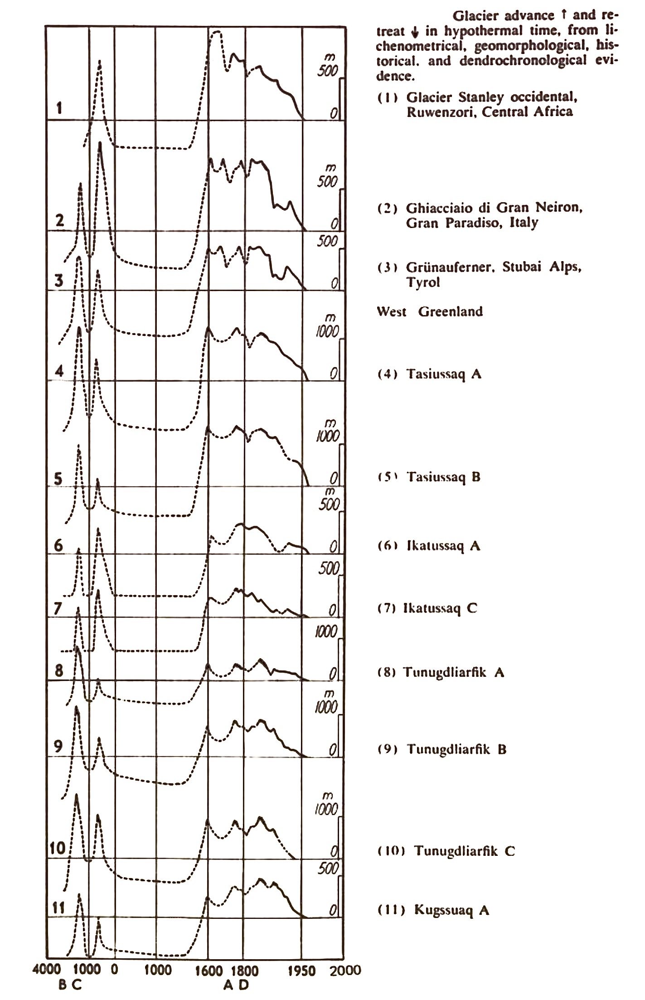
Whitaker (1953) attempted to circumvent the problem of time scale by proposing an approach based on the 'prevailing climax' which was related to the maximum area covered. As Selleck (1960) points out this can be criticized since a minor constitutent of a forest understory for example could become the dominant species of the next generation.
One marked aspect of the theoretical climax relative to the stages of succession leading to it is the rate of change. The initial stages of succession are usually relatively rapid, the rate of change gradually decreasing until vegetational change is at a minimum and if we assume climatic and environmental stability all directional change ceases in the 'climax'. Again Cooper (1926), one of the early protagonists in this field, expressed this aspect very well: The climax period comes into being insensibly. Much, or even all, of a unit succession may be characterized by a gradual diminution of the rate of change. The climax itself being merely a continuation of this process, it is not possible to mark it off absolutely from the period of more active succession.' In general terms the rate of vegetation change would seem to offer a possible means by which climax vegetation could be delimited from the terminal stages of succession, but again the definition of the relative rates of change in the two appears to be insurmountable.
We are forced to conclude that climax vegetation is an abstract concept which is never reached in reality due to the continuous fluctuations of the climate (directional over periods of hundreds of years. Clearly the climate of a region has an over-all control of the vegetation. The regional development of tundra, coniferous forest, deciduous forest etc., in a progression from the arctic towards the equator reflects this over-all control. However within each of these zones there exists a great variety of detailed modification, imposed by other factors such as geology, physiography and human activity. Such vegetation is equally stable over long periods of time and is self-perpetuating and on this basis the polyclimax theory is more sufficient than the monoclimax theory which represent an extreme abstract ideal. That the problem is relative, is inescapable and it is only possible to refer to vegetation as in an active process of successional development as compared to a state of extremely slow change, barely distinguishable from a self-perpetuating stable ideal".
It is perhaps significant that the theory of climatic climax has been built up on the study of temperate vegetation and the evidence presented by Richards (1952) clearly indicates the widespread occurrence of stable vegetation types in the tropics determined by soil conditions. Thus Richards states, 'The primary forest types of Moraballi Creek, for instance, are all found under the same climate and there is no reason to consider any one of the five as less stable than the others. No process of development and no change of soil conditions is known or can be imagined which would, for example, convert the Wallaba forest on bleached sand into mixed forest on red loam or vice versa. The Mora forest, liable to flooding, shows no tendency to develop into mixed forest and the Mora soil could not conceivably develop into a mixed forest soil. It seems that all the Moraballi Creek primary types must be regarded as of equivalent status, as the Polyclimax theory demands. Each depends on a different but equally permanent, combination of soil and topography developing under the same set of climatic conditions. (See also Davis and Richards, 1933-34.)
It is conceivable that climatic variation over long time scales is absent in the equatorial region, or is minimal relative to the marked glacier activity in the arctic and resultant plant successions outlined previously. No evidence is available which would demonstrate previous vegetational types in areas of present day primary rain forests and it is possible that the 'abstract' climax may in fact exist in such areas where there has been a minimum of climatic disturbance. On the other hand the fluctuation of climate has only recently been studied in detail and a decision as to the likelihood of major equatorial variations will have to wait further developments in meteor-ology. It is well known however that raised beaches occur around several of the large African lakes reflecting (presumably) different climatic conditions in the past.
One further aspect of the climax concept with profound implication in the delimitation of 'community units' is of importance: Clements regarded association as a complex organism [or quasi-organism, Tansley (1920)] which arose through a variety of causes and subsequently grew, matured and died. In actively changing vegetation the association which replaces a given seral stage is different whereas in climax vegetation the 'death' of an association results in the establishment of a subsequent identical association. Implicit in this concept of the association as an organic entity or living organism' is the concept that climax associations can be readily recognized, defined and classified. The other extreme is presented by Gleason (1917, 1926) who proposed the individualistic concept of the plant association, which basically relates the continuously variable environment to an equally continuously variable vegetation. Thus no two associations are identical and implicit here is the fact that accordingly they cannot be classified and often cannot be clearly defined. Embodied in these two concepts are the two extremes of approach to community classification in use today. This will be considered in some detail at a later stage (see Chapter 9). In addition to this aspect of the climax association as a distinct and recognizable entity Greig-Smith (1952b) points out: ‘This (the complex organism of Clements) implies direct interaction between individuals both of the same and of different species.’ Interaction between species or individuals of the same species can be conveniently measured by means of a \( \sum x^2 \)-test or by an analysis of the 'pattern' of species distribution respectively (see Chapter 2 and 6). Greig-Smith investigated several sites in secondary forest ranging from areas recently disturbed (Site D) to areas disturbed many years before the investigation and only imperceptibly different from (undisturbed) primary forest (Site B). In addition an area of primary forest was sampled for comparison (Site E). The association between species is given in Table 3.1, 3.2 and 3.3 as the numbers of observed and expected joint occurrences of pairs of species. Clearly the maximum amount of association is present in Site \(\mathcal{D}\) (most recently disturbed) and least evidence of association occurs in Site \(\mathcal{E}\) (primary forest). This is clear evidence that the maximum interaction between species inherent in the complex organistic' concept of climax vegetation is not valid at least in tropical rain forest. Greig-Smith thus concludes that the individualistic concept of Gleason is a more satisfatory alternative in part at least. The evidence relating the pattern of distribution of the individuals of a species in an area to the 'stability' of the vegetation, suggests equally a minimum of interaction in stable vegetation. Greig-Smith (1961b) examined the different pattern scales in Ammophila arenaria, sampling young developing dunes, stable dunes and dune 'slacks'. His data (Fig. 3.13) show almost complete absence of pattern in the early formation of dunes (NAD 12), a maximum of pattern in the stabilizing dunes (NAD 7, 8 and 9) and only slight indications of pattern in the most stable sites examined (NAD 2, 3 and 4). The amplitude of the peaks is proportional to the intensity of the patterns. In this example the pattern varies from one consisting of patches of slightly higher density which alternate with similar patches of lower density, to sites where the patches are more aptly described as 'clumps'. Again the evidence suggests random distribution in the final stable vegetation, that is to say no interaction between individuals of a species.
| Species | Pis | Rud | Ama | Mic | Lac | Ali | Pro | Coc | Vis | Bac | Ise |
|---|---|---|---|---|---|---|---|---|---|---|---|
| Pisonia cuspidata (73) | — | 52.56 / 53 | 42.34 / 44 | 42.34 / 39 | 39.42 / 43 | 30.66 / 33 | 30.66 / 34 | 25.55 / 23 | 16.79 / 16 | 14.60 / 17 | 13.87 / 13 |
| Rudgea freemani (72) | — | 41.76 / 38* | 41.76 / 34** | 38.88 / 48 | 30.24 / 26* | 30.24 / 32 | 25.20 / 27 | 16.56 / 13* | 14.40 / 17 | 13.68 / 14 | |
| Amaioua corymbosa (58) | — | 33.64 / 24*** | 31.32 / 37* | 24.36 / 19* | 24.36 / 26 | 20.30 / 25* | 13.34 / 15 | 11.60 / 11 | 11.02 / 10 | ||
| Miconia prasina (58) | — | 31.32 / 26* | 24.36 / 29 | 24.36 / 22 | 20.30 / 13* | 13.34 / 10 | 11.60 / 12 | 11.02 / 11 | |||
| Lacistema aggregatum (54) | — | 22.68 / 29* | 22.68 / 30** | 18.90 / 21 | 12.42 / 12 | 10.80 / 7 | 10.26 / 6* | ||||
| Alibertia acuminata (42) | — | 17.64 / 17 | 14.70 / 11 | 9.66 / 8 | 8.40 / 12 | 7.98 / 8 | |||||
| Protium guianense (42) | — | 14.70 / 13 | 9.66 / 7 | 8.40 / 7 | 7.98 / 8 | ||||||
| Coccoloba latifolia (35) | — | 8.05 / 7 | 7.00 / 7 | 6.65 / 4 | |||||||
| Vismia guianensis (23) | — | 7 | 6 | ||||||||
| Bactris sp. (20) | — | 7 | |||||||||
| Isertia parviflora (19) | — | ||||||||||
| Values shown as expected / observed. * P = 0.01–0.05, ** P = 0.001–0.01, *** P < 0.001. | |||||||||||
| Species A | Species B | Expected | Observed |
|---|---|---|---|
| Rudgea freemani | Cordia curassavica | 30.00 | 34 |
| Casearia spinescens | Rudgea freemani | 22.50 | 30 * |
| Bactris sp. (stems) | Casearia spinescens | 15.75 | 11 * |
| Fagara martinicensis | Bactris sp. (stems) | 11.55 | 10 |
| Bactris sp. (seedlings) | Fagara martinicensis | 10.56 | 10 |
| Acnistus arborescens | Bactris sp. (seedlings) | 9.92 | 10 |
| Casearia decandra | Acnistus arborescens | 6.30 | 13 *** |
| Casearia guianensis | Casearia decandra | 5.85 | 10 ** |
* P = 0.01–0.05, ** P = 0.001–0.01, *** P = < 0.001
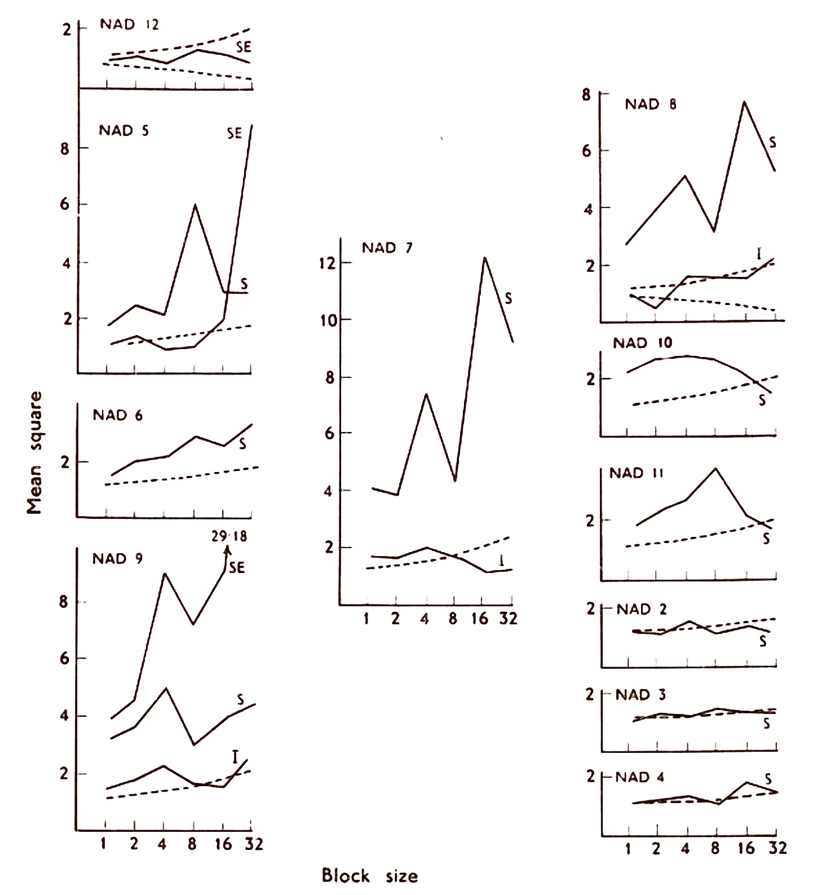
A similar set of data is given by Kershaw(1963) collected from associations of Calamagrostis neglecta in central iceland. It behaves here as a primary coloniser of open water and remains at a reduced level of performance and density while the silting up of the area continues. The recent volcanic nature of the rock in the area results in the annual deposition of vast quantities of cindery silt on the valley floors and by an inspection of the depth of water table below a stand of Calamagrostis it is possible to arrange a relative time scale for each stand. The deeper the water table and the more the silting, the longer the Calamagrostis has maintained itself in that particular site. In detail such a method of dating would be open to severe criticism but it does give an indication of the relative age of stands. Samples were taken from numerous sites. The data (Fig. 3.14) show an identical trend. There is a minimal pattern intensity in the early stages of Calamagrostis establishment (Fig. 3.14a) followed by an increase in intensity until silt accumulation lowers the water table to about 25 cm (Fig. 3.14b and Fig. 3.14c). At about 50 cm the pattern of Calamagrostis though still clear is very much reduced in intensity. This trend is continued (Fig. 3.14d-g) in the series until the maximum depth of water table underlying Calamagrostis is reached at about 105 m in the 'desert areas', after which most vegetation disappears altogether. A further collection of data was made in the area in a topographically uniform Rhacomitrium heath situated at about 790 m on the flat summit of a mountain. From the remoteness and past history of the region is would appear that the area had been completely undisturbed and from the evidence outlined above little pattern should have been present, apart from that produced by the morphology of the species. Again the analysis of the data (Fig. 3.15) is consistent with the concept of a minimum of pattern (interaction between individuals) in stable vegetation. The pattern detected is due to the morphology of the plant and is equivalent to the dimensions of the area covered by the rhizome system of an individual plant.
| Species A | Species B | Expected | Observed |
|---|---|---|---|
| Rudgea freemani | Myrcia granulata | 26.55 | 30 |
| Hymenaea courbaril | Rudgea freemani | 16.65 | 17 |
| Rinorea lindeniana | Hymenaea courbaril | 12.21 | 7 * |
| Eugenia perplexans | Rinorea lindeniana | 8.58 | 10 |
| Peltogyne porphyrocardia | Eugenia perplexans | 6.24 | 7 |
| Swartzia simplex | Peltogyne porphyrocardia | 5.20 | 5 |
| Calyptranthes fasciculata | Swartzia simplex | 5.28 | 7 |
| Clathrotropis brachypetala | Calyptranthes fasciculata | 5.28 | 3 |
| Brownea latifolia | Clathrotropis brachypetala | 5.28 | 5 |
| Eschweilera subglandulosa | Brownea latifolia | 5.55 | 7 |
| Bactris sp. | Eschweilera subglandulosa | 5.18 | 7 |
* P = 0.01–0.05, ** P = 0.001–0.01, *** P = < 0.001
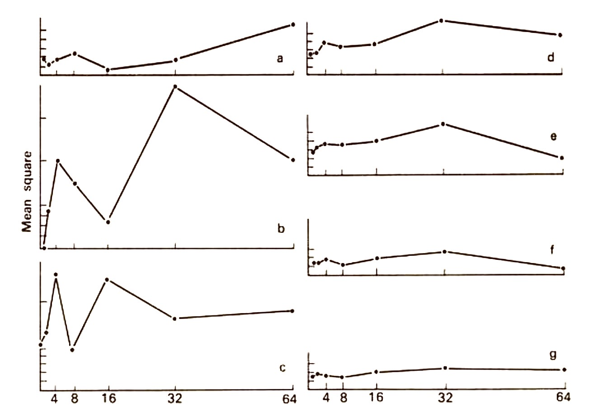
Brereton (1971) examining scales of pattern and their intensity (measured as peak height) showed for two salt marsh species Puccinellia and Salicornia a marked change in both pattern scale as well as pattern intensity. The sites sampled ranged from high water mark spring tides (stand 1) successively down through the marsh, to the lower limit of Salicornia at approximately the level of high water at ordinary neap tides (stand 6). The results (Fig. 3.16) are extremely clear cut and call for little comment.
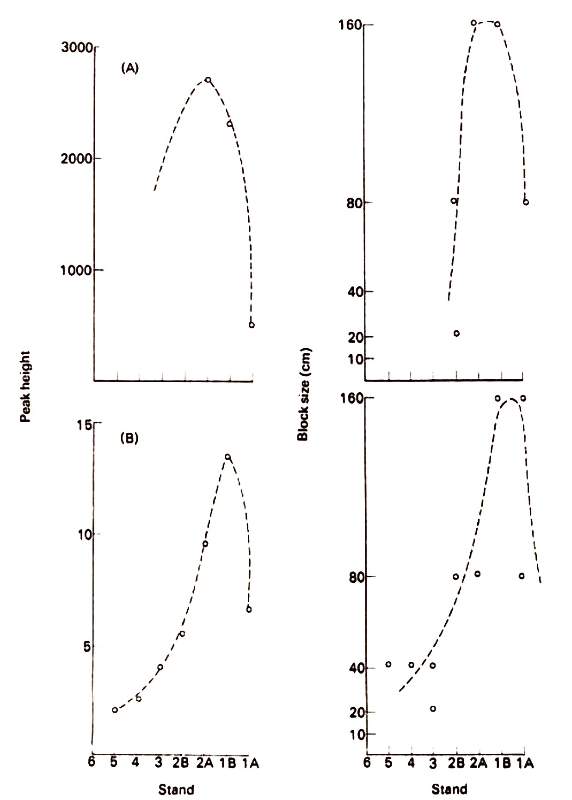
The evidence is consistent; it is drawn from a variety of habitats ranging from sub-arctic moss-heath to tropical forest and indicates that the original thesis of Greig-Smith's is correct enforcing a re-evaluation of Clements' analogy of the climax vegetational state with a complex organism.
\( * P = 0.01\text{–}0.05 \quad ** P = 0.001\text{–}0.01 \quad *** P < 0.001 \)
Alternative models of succession
Over the last decade there has been a number of criticisms of the generality of the mechanisms of succession implied by the original deterministic model proposed by Clements: where the initial species of the succession alter the environment in such a way that it is then more suitable for other subsequent invading species. The corollary of this is that the actual sequence is predictable and accordingly the form and composition of the climax vegetation virtually pre-defined; the Clementsian model is thus completely deterministic. However, a body of evidence has accumulated indicating that this is not necessarily the case. Thus, Walker (1970) examined the peat stratigraphy at the margins of a number of replicate ponds in Great Britain where the classical succession sequence, starting with open water and running through submerged aquatics to floating-leaved aquatics, reed-swamp, and finally to an alder-willow woodland, should be evident. His data in fact showed that there was no consistent sequence at all, emphasizing the difficulties inherent in ordering successional phases by 'intuitive' methods. The succession sequence, open-water; submerged, floating-leaved aquatics; reed swamp; willow, alder woodland certainly is intuitively a reasonable sequence and can actually sometimes occur. However, since this primary succession takes so long, experimental and sequential field evidence is difficult to obtain, and the intuitive sequential ordering of disjunct stages of both this, or equally, other primary successions can lead to erroneous conclusions Egler (1954), Drury and Nisbet (1973), Colinvaux (1973) and others, have all now questioned the validity of the completely deterministic sequence in any primary plant succession and the validity of these criticisms have forced an equivalent level of rigorous re-examination of determinism in secondary plant successions as well (Hulst, 1978; Peet and Christensen, 1980; Pickett, 1976 and 1982; Horn, 1974; etc). Connell and Slatyer (1977) and Noble and Slatyer (1980) have very elegantly summarized the problems that have now been identified in the deterministic model of primary or secondary plant succession and have outlined two alternative models Their three models are given in Fig. 3.17 and outline the mechanisms that would bring about a successional change after a perturbation, assuming no further significant changes in the abiotic environment. Between the first two steps in the diagram (A to B) there is a major dichotomy between alternative models of succession. Model 1 assumes that only certain 'early successional' species are able to colonize the site in the conditions that occur immediately following the perturbation Models 2 and 3 assume that any arriving species, including those which usually appear later, may be able to colonize. This dichotomy emphasizes the fundamental difference between the original conception of succession proposed by Clements (1916) and the alternative ones described here.
Up to this point all models agree that certain species will usually appear first because they have evolved colonizing' characteristics such as the ability to produce large numbers of propagules which have good dispersal powers, to survive in a dormant state for a long time once they arrive (Marks, 1974), to germinate and become established in unoccupied places, and to grow quickly to maturity. They are not well adapted to germinating, growing, and surviving in occupied sites, where there is heavy shade, deep litter etc., so that offspring seldom survive in the presence of their parents or other adults. Thus in all models, early occupants modify the environment so that it is unsuitable for further recruitment of these early successional species. In the deterministic model (Model 1) this process of reaction continues as the classical Clements sequence.
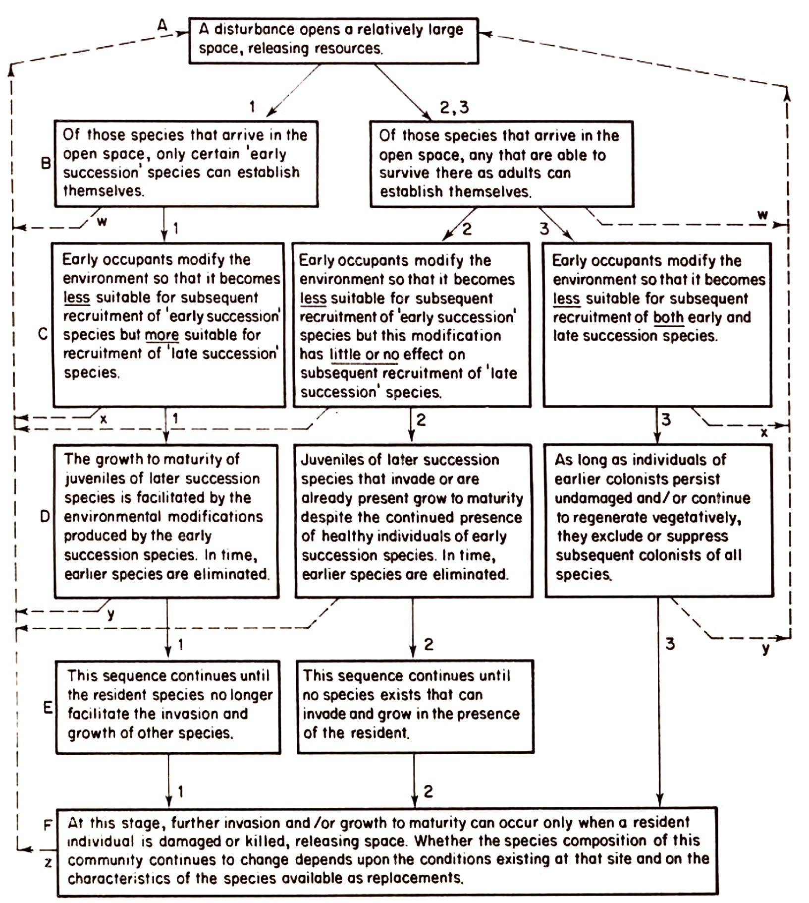
In Model 2, the modifications wrought on the environment by the earlier colonists neither increase nor reduce the rates of recruitment and growth to maturity of later colonists (steps C and D). Species that appear later are simply those that arrived either at the very beginning or later and then grew slowly. The sequence of species is determined solely by their life-history characteristics. In contrast to the early species, the propagules of the later ones are dispersed more slowly and their juveniles grow more slowly to maturity. They are able to survive and grow despite the presence of early-succession species that are healthy and undamaged. Connell and Slatyer refer to this model as the tolerance model and it stands as an intermediate case between the first and third, the inhibition model.
In contrast to the first model, the third holds that once earlier colonists secure the space and/or other resources, they inhibit the invasion of subsequent colonists or suppress the growth of those already present. The latter invade or grow only when the dominating residents are damaged or killed, thus releasing resources (steps C and D). However, there is no restriction on the replacement species involved. If replacement is by the same species succession will not take place. Conversely if replacement is by a different species then the level of 'change' is dictated by whether the replacement is a late', or 'middle'-succession species. In these instances a traditional successional sequence will be seen to occur.
In summary, the tolerance model emphasizes that species can establish and grow to maturity in the presence of others either utilizing an alternate 'niche' or a lower resource level. Conversely in the inhibition model later species cannot grow to maturity in the presence of earlier ones; they appear later because they live longer and so gradually accumulate as they replace earlier ones. In addition Models 1 and 2 infer death by competition whereas Model 3 relies on more cataclysmic events and/or predation. Connell and Slatyer have concluded that since little experimental field evidence exists for Model 1 except in the early stages of colonization of extreme environments it is doubtful that it applies to replacement in later stages of terrestrial plant succession. Similarly the tolerance model so far has only been validated by the data of Horn (1975) who examined replacement in beech forest where unfortunately "saplings' tend to be root-sprouts produced by vegetative reproductive means and are not replacements by independent offspring. In contrast they conclude there is a considerable body of evidence to support the inhibition model.
It is perhaps unfortunate that, persistently, ecological events have to be forced to fit a single generalized model. This is equally evident in the current work discussed above which rejects the Clementsian generalized model and seeks to replace it with an equally pedantic inhibition model. The existence of reaction in succession cannot be refuted, neither can competitive reactions between individuals of a species or between different species. Equally the frequency of occurence of characteristic vegetational units which can be classified as well as the less frequent intermediates which demand ordination, further emphasises at least a degree of 'determinism' in plant succession. Relevant to this discussion is an example of a deterministic-tolerance succession provided by Maikawa and Kershaw (1976) together with a summary of the partial reaction mechanisms and their probable interaction at the physiological level by Kershaw and Rouse (1976), Kershaw (1978) and Kershaw and Smith (1978).
The recovery succession of spruce-lichen woodland following fire
The successional sequence following fire in Stereocaulon woodland, which is an extensive vegetation type in the Northwest Territories in Canada (Maikawa and Kershaw, 1976), offers a useful example here, since the data are derived from an area of topographic and soil uniformity but from sites burnt at specific times estimated quite accurately from fire scars readily available at the periphery of each burn. Johnson and Rowe (1975) have examined fire reports prepared by the Northwest Forestry Service, for a region of subarctic forest which lies to the East of Great Slave Lake, and show that fire is a frequently occurring but natural event with almost all of the fires caused by lightning. Four phases of recovery are recognized: Phase 1, the Polytrichum phase with P. piliferum, Biatora granulosa and Lecidea uliginosa forming the major cover over the recently burnt surfaces. Phase 2, the Cladonia phase, developing after 15-20 years with the establishment of a number of Cladonia species, in particular Cladonia gonecha, C. uncialis and C. stellaris. Phase 3, the Picea mariana-Stereocaulon paschale woodland phase, developing after 60 to 70 years, forming the mature woodland phase and dominating large areas of the region.Finally, Phase 4 which is apparent after 130-150 years, by which time the canopy closes and the luxurious carpet of Stereocaulon paschale is replaced by a carpet of mosses dominated by Hylocomium splendens, Pleurozium schreberi and Dicranum species. Only rarely does this final closed canopy spruce - moss woodland develop, since the Stereocaulon woodland is extremely fire-susceptible and is usually reburnt before the final phase of the succession is initiated. It is important to recognize that Picea mariana as well as Vaccinium vitis-idea enter the succession immediately, the former arriving as seed and the latter surviving the fire as an underground root-stock (Fig. 3.18).
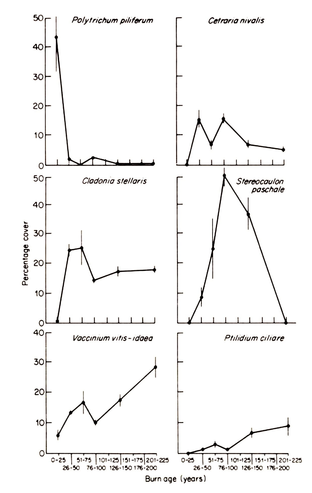
During the vegetational succession there is a concurrent and equally marked development of surface microclimate. Kershaw et al., (1975), Kershaw and Rouse (1976), Rouse (1976) and Kershaw (1978), have described the surface microclimate of freshly burned plots and contrasted this with 23-and 80-year old recovery phases. representative of the Cladonia and Stereocaulon phases of the recovery sequence, respectively. Considerable differences develop in surface albedo following fire with values dropping from 20% to 5% on freshly burned surfaces (Fig. 3.19).
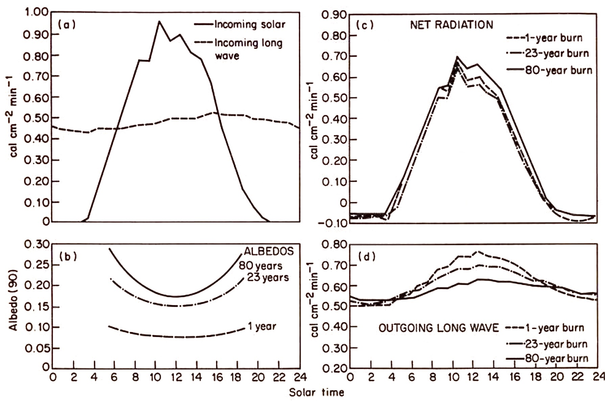
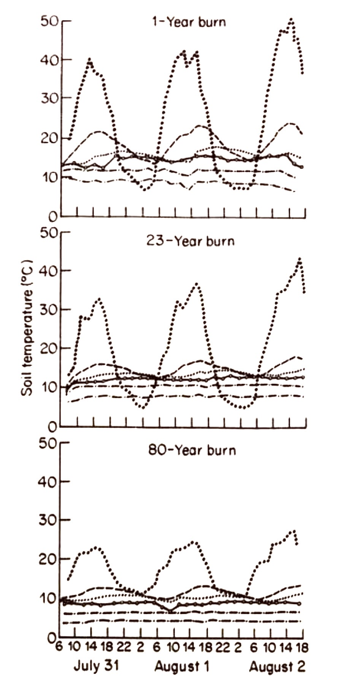
The subsequent recolonization by Cladonia species and Polytrichum piliferum produce a marked increase in albedo on the 23 year burn. In the first 25 years of recovery after fire, two-thirds of the albedo increase has already occurred. The outgoing long-wave fluxes vary largely as a function of surface temperature and during the day time period the one year burn, with the highest surface temperature. shows the strongest outgoing long-wave loss. Then summation of these two effects is seen in the surface net radiation of the sites. The Cladonia phase, which has both a high albedo and marked infrared radiation loss, thus has a lower amount of energy available at the surface than the Stereocaulon woodland. The long-wave radiation losses are simply a function of surface temperature of the sites and there are, of course, corresponding soil temperature patterns (Fig. 3.20). For a typical summer period the soil temperature at the surface of the one-year burn shows very high diurnal fluctuations which are heavily damped in the 80-year old woodland. The soils in the lichen woodland are colder at all depths, but of more significance to the developing lichen cover, surface maxima and minima calculated from the long wave radiation data show extreme values on the one year and 23-year burned surfaces. Maximum surface temperatures of 65°C probably could occur during high radiation periods on the one year burn with a diurnal range of up to 46°C. On the 23-year burn, surface temperatures up to 45°C are likely with early morning ground frost even in July, as a result of extreme long wave radiation cooling.
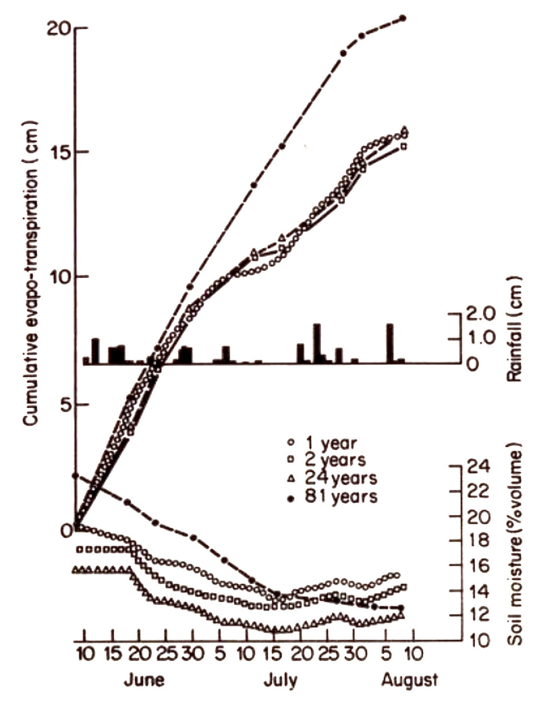
These high surface temperatures occurring during the early successional stages following fire reflect the very xeric conditions typical of these intial phases. Under these dry conditions of the Cladonia recovery phase, the majority of the net radiation is dissipated as a sensible heat flux. Thus the 1976 soil moisture and evapo-transpiration characteristics of the Stereocaulon lichen woodlands on the Northwest Territories (Kershaw and Rouse, 1976) show the same constant evaporation and evapo-transpiration to the end of June when there is a rapid and substantial divergence, the 81-year burn maintaining much the same rate through to the end of the measurement period, whereas the 1- and 24-year burns show a large decrease in evaporation during July and August (Fig. 3.21). This decrease reflects the initially drier soils of the 24-year old burn as well as the importance of evapo-transpiration from the spruce of the lichen woodland; the initial low soil moisture values reflecting the earlier snowmelt from the open young burn surface. As a direct result of this decrease in evaporation over the 1-year and 24-year burns the energy usually involved in evaporation will be dissipated as a sensible heat flux. This can be seen readily from the energy balance equation
\(\mathcal{Q}\)*= \(\mathcal{L}\) \(\mathcal{E}\)+ \(\mathcal{H}\)+ \(\mathcal{G}\)
where the net radiation, O*, is partitioned between LE, the latent heat of evapo-transpiration, H, the sensible heating of the atmosphere, and G, the heating of the subsurface. Since G is very small, O* is largely partitioned between LE and H. Accordingly, if the latent heat flux decreases, the sensible flux must increase. As a result of this, in July and early August after the decline of the evaporation from the 1-and 24-year burns, the sensible heat flux will be considerably greater than over the lichen woodland. This is visually evident as dust devils which form frequently over the burned surfaces on hot summer days. These severe conditions may form one of the essential limitations to higher plant growth and allow the development of the lichen surface without competition from such potentially faster growing species. Surface temperatures are finally ameliorated in the developing Stereocaulon woodland as a result of increased shading by the steadily growing spruce trees and by the effective mulching properties of the lichen mat with the resultant maintenance of soil moisture at field capacity evident in Fig. 3.21. This allows evaporative cooling with a diminished sensible heat flux and results in lower surface temperatures.
The results are confirmed by direct measurement of surface, thallus and air temperatures. Thus air temperature 2 mm above Biatora granulosa crusts reach about 48°C, contrasting markedly with equivalent air temperatures at the surface of the Stereocaulon paschale mat even in very open woodland. As the tree density slowly rises and the lichen surface becomes increasingly shaded, this temperature contrast is even more marked, with the maximum temperature occurring at any one site being of very restricted duration.
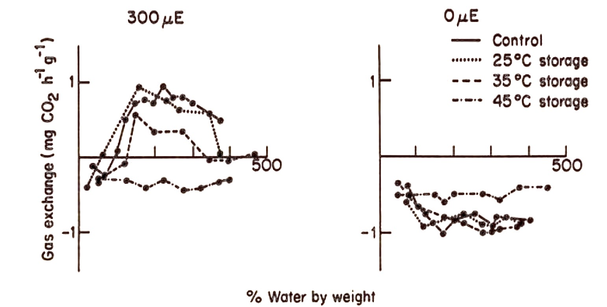
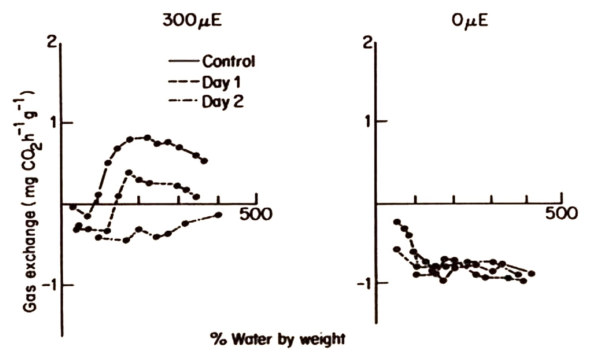
Kershaw and Smith (1978) have shown that Stereocaulon paschale is very sensitive to surface temperatures greater than 30°C. Experimental replicates of Stereocaulon paschale stored air-dry at 35°C day and 15°C night temperature show a 50% decline in their rate of net photosynthesis after two weeks (Fig. 3.22). At higher stress temperatures (45°C day and 15°C night temperature) a single 12-hour period effects a net photosynthetic decline and a further 12-hour stress period virtually eliminates all photosynthetic activity (Fig. 3.23). It is evident then that the surface temperature of the earlier stages of the succession is too excessive for the survival of Stereocaulon paschale and its entry into the succession is delayed for 50-80 years, during which time the harsh thermal regime is modified. This occurs in two ways. There is a gradual accumulation of an organic layer and thus an enhanced retention of soil moisture, resulting in a significant reduction of the sensible heat flux (Rouse, 1976; Kershaw, 1977). At the same time tree growth leads to a sharp decrease in direct radiation and the combination of these two processes results in a much cooler average surface temperature which can be successfully colonized by Stereocaulon paschale. Thus the long successional sequence leading to the final establishment of Stereocaulon woodland is primarily a function of the heat sensitivity of Stereocaulon. It is perhaps significant that many of the dominant species of the early succession phases, such as Cladonia cristatella, C. verticillata, and C. unicialis, are often more typical of temperate regions where thermal stress in an open habitat would be a normal part of the environment.
This fire-succession sequence emphasizes two important points: that. (1) reaction is indeed present in secondary succession, and is a primary driving force in some instances, and (2) that Picea mariana and Vaccinium vitis-idaea for example, are present from the start of the succession and are tolerant of the initial and secondary dominant species, eventually establishing themselves as the final dominants of the succession, simply by their longevity. It is also probable that within the Cladonia phase there also may be continuous replacement of one species by another in the sense of the inhibition model proposed above. Indeed, there is very good evidence for the inhibition of Picea seedling establishment by mature lichen mats in spruce-lichen woodland (Cowles, 1982). In agreement with Horn (1981) we conclude that all three models originally formally proposed by Connell and Slatyer (1977) will legitimately apply to vegetational succession, either individually to specific stages of a succession, or equally in combination to any stage or stages. We also emphasize that reaction may be considerably more subtle in its effects than has been traditionally recognized.